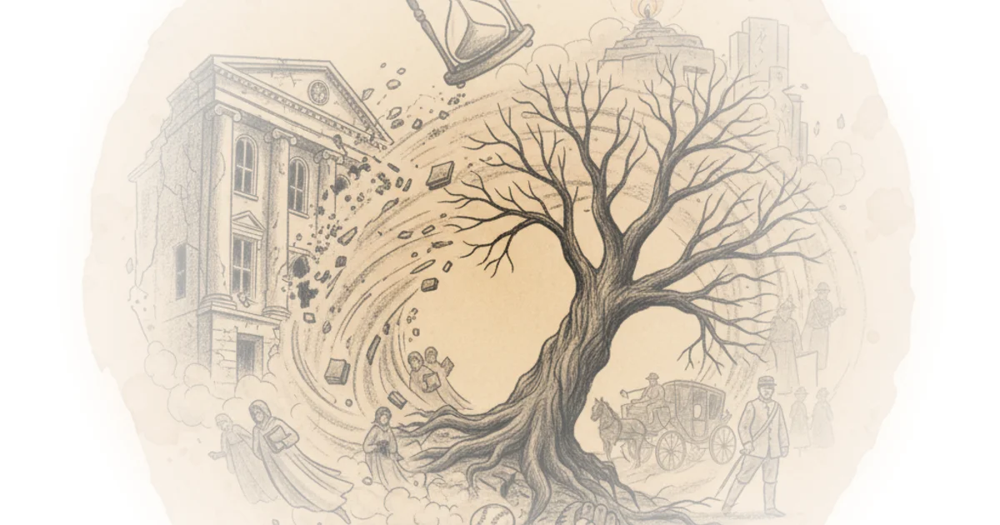

I went to cannes to see 2025’s most promising movies Tom van der Linden · Like Stories of Old ·May 27, 2025 · 17 min read · Culture
Episode #228 ... albert camus - kafka and the fall Stephen West · ·May 12, 2025 · 33 min read · Culture
Is labour doomed? | Novara debates w/ ash sarkar, michael walker & aaron bastani Novara Media · Novara Media ·May 7, 2025 · 65 min read · Culture
They remade the battle of helm's deep in a hospital show, and it's insane Tom van der Linden · Like Stories of Old ·May 7, 2025 · 17 min read · Culture
Anthony fantano: Music, art and radical politics Doom Scroll · Doom Scroll ·Apr 29, 2025 · 58 min read · Culture
The strange psychology of the long take Tom van der Linden · Like Stories of Old ·Apr 15, 2025 · 16 min read · Culture
The most tragic movie of the decade Tom van der Linden · Like Stories of Old ·Mar 20, 2025 · 18 min read · Culture
How vail destroyed skiing More Perfect Union · More Perfect Union ·Mar 7, 2025 · 16 min read · Culture
Adam friedland: Behind the adam friedland show Doom Scroll · Doom Scroll ·Mar 4, 2025 · 56 min read · Culture
Episode #223 ... religion and the duck-rabbit - kyoto school pt. 3 Stephen West · ·Mar 3, 2025 · 34 min read · Culture
The worst kind of sequel Tom van der Linden · Like Stories of Old ·Feb 21, 2025 · 24 min read · Culture
Episode #222 ... dostoevsky - love in the brothers karamazov Stephen West · ·Feb 18, 2025 · 41 min read · Culture
How Indonesian instant noodles became a Nigerian sensation Asianometry · Asianometry ·Feb 16, 2025 · 16 min read · Culture
Why star wars can’t move forward Tom van der Linden · Like Stories of Old ·Jan 30, 2025 · 19 min read · Culture
The college enrollment crisis PolyMatter · PolyMatter ·Jan 11, 2025 · 12 min read · Culture 
Episode #219 ... dostoevsky - crime and punishment Stephen West · ·Dec 22, 2024 · 34 min read · Culture
The 10 best movies of 2024 Tom van der Linden · Like Stories of Old ·Dec 18, 2024 · 27 min read · Culture
Episode #218 ... dostoevsky - notes from underground Stephen West · ·Dec 17, 2024 · 35 min read · Culture
Episode #217 ... religion and nothingness - kyoto school pt. 2 - nishitani Stephen West · ·Dec 7, 2024 · 46 min read · Culture